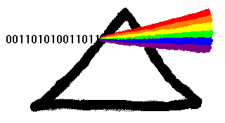

|
Newton's Prism
Home of Prism Research.
Where ideas come to light.
|
News :
(1/1/09) New home of Newton's Prism web site since AOL decided to discontinue web serving
(9/5/00) New version of BinHexer
v1.1. Overcomes OS limitation so now larger files
can be transferred. A 2MB song is successfully playing on
my MP2100.
Speed has increased 10x as well.
(7/31/00) All of the pictures
and sounds and Mac resources
that occur in the Newton 2.1 ROM.
Extracted courtesy of BinHexer.
(7/21/00) New Product: BinHexer
v1.0. The Newton finally gets BinHex
services. This product can encode and decode standard BinHex
files for
transferring to the desktop or over the Internet.
(10/20/99) New Product: Planet
Finder v1.0. This is an excelent astronomical
calculator to find the position of the planets any time in history.
(10/20/99) I'm sorry but Prism Research has been challenged to
stop infringing
on ARM, Inc.'s registered trademark. Therefore there will
be no more chARM.
It has been renamed to cfkac (Compiler Formerly Known As chARM).
(8/6/99) Example of compiling with chARM: Peeker
will look into the
memory of your Newon.
(8/6/99) Example of the power of nsScribe with chARM: here
are ALL of the
Magic Pointers in the MP2100 2.1 ROM decompiled into NewtonScript.
(8/6/99) New product chARM v1.0.
Now have the power of native ARM
compiling on your Newton.
(8/6/99) New version of nsScribe
(v1.16)
(6/29/99) New online ordering for credit
card purchases.
(4/2/99) Release
of various large packages with compression turned on.
(3/4/99) Nathaniel Hawthorne's The
Marble Faun released as freeware.
(2/25/99) New version (3.02) of MathLib
and RandomLib
(2/25/99) nsScribe v1.15 is
released as freeware!
(2/25/99) Four
Arthurian Romances released as freeware.
(2/25/99) Well, here's what you all have been waiting for:
NewtonGL - the very first
3D graphics language available on a PDA.
This is a beta release as freeware.
(7/22/98) Free Newton Fonts!
More fonts. All updated to be a smaller package.
(7/22/98) New version (3.01) of MathLib.
Smaller, faster, and base conversions added.
(6/26/98) Free Newton Fonts!
Exotic, hard-to-find languages for the Newton.
(6/23/98) New version (3.00) of MathLib.
Excitement!! MathLib has now been worked
into Works Calculations from Apple. Finally, a user interface.
The power of MathLib comes to the average user. Works Calculations
can now do:
Take the derivative of ANYTHING symbolically;
Numerical calculus;
Graph any function;
Fit data to polynomials;
Boolean logic;
Complex calculations.
(1/18/98) New version (2.01) of MathLib.
Separated into two packages MathLib and RandomLib.
Ability for developers to link into prototypes.
Added vector calculus, multiple derivatives.
(1/18/98) New version (1.12) of nsScribe.
Now fully compatible with Newton Works paper.
Compile unlimited amounts of NewtonScript.
Decompiles to fully reusable code
(10/2/97) New version (1.10) of nsScribe.
Now mimicks the NTK Inspector.
Uses ten times less heap space (from 20k to 2k)
(9/19/97) New product - nsScribe.
Write NewtonScript in any
application, tap the Assist button, and the answer appears right
next to the question. Great for teachers with homework assignments:
students can check answers right on the page.
(9/19/97) New version (2.00) of MathLib.
Expanded abilities.
Calculate 2 millionth hexadecimal digit of pi on your Newton!
First 2585 prime numbers.
Bessel's Differential Equation solutions.
(6/10/97) Prism Research is launched from Bordini and Associates.
Contact Information:
Prism Research
Email NewtsPrism
In Cyclopes
Newton and the Newton logo are registered trademarks of
Apple Computer, registered in the United States and other countries.